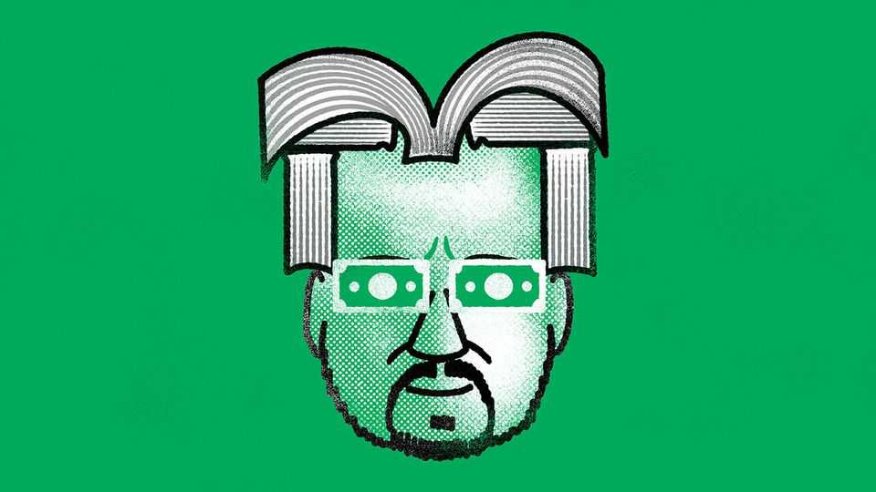

The late Perry Mehrling explained the hierarchy of money
The course for par

Oct 22nd 2026
THERE IS A moment in Perry Mehrling’s opening lecture on money and banking, a course he taught for years at Barnard College in New York, when the professor recalls the origins of his intellectual passion. (Thanks to the magic of the internet, the recording is available for anyone to watch.) His eyes light up. His enthusiasm is laid bare. He went to the library, he remembers, saw a shelf full of treatises on money, and said to himself, “If I could have a life reading all of those books, just from left to right, that would be the best life ever.”
His best life set him apart from most mainstream economists. They read articles, not books. And their intellectual framework leaves surprisingly little room for money. They care about the production and exchange of stuff, not the pieces of paper that change hands along the way. A famous couplet sums up their creed: “promises of payment/Are neither food nor raiment”.
But if you have made a promise of payment, you will need money, not food or raiment, to fulfil it. That “settlement constraint” is a starting point of Mr Mehrling’s own school of thought, which he called “the money view”. It is a little school, he admitted. But he did not feel alone. He drew on a shelfful of intellectual ancestors, such as Hyman Minsky, a maverick American economist, and Walter Bagehot, the third editor of this newspaper. (“They’re pretty great guys, actually,” he assures his lecture audience.) He also inspired other adherents, such as Daniel Neilson, a data scientist, and Iñaki Aldasoro of the Bank for International Settlements, whose own interpretation, dedicated to Mr Mehrling’s memory, was published this month, shortly after the professor’s untimely death at the age of 67.
According to this tradition, money evolves out of promises of payment. Suppose I owe you something. Perhaps that obligation is written on a piece of paper. If you trust me, you might accept that paper in lieu of immediate satisfaction of my debt. You might even try offering it to someone else to clear a debt of your own. If they too trust me—or feel confident that everyone else does—they could take my paper from you as settlement of your obligation to them. My IOU begins to circulate like money.
A complex, hierarchical apparatus ensures that some promises are routinely accepted as money. Mainstream economists concentrate on only a few parts of this system. They obsess over the policy rules that curb inflation, ensuring that money holds its value against goods and services. Mr Mehrling was fascinated by the rest of the plumbing. What, he asked, ensures that the dollars in a bank account, a money-market fund or an offshore deposit hold their value, at par, with higher breeds of promise, such as reserves at the central bank? He treated “par”—the one-for-one exchange rate between different kinds of dollars—as one of “four prices” of money, as important as the familiar trio of the interest rate, exchange rate and price level of goods and services.
Par normally attracts little attention. The public is so confident it will hold, they barely know it exists. In good times banks happily extend loans and create deposits, adding new promises to pay. This “elasticity” helps the economy flourish. But it can create strains. And the scale of the system is not the only thing that grows. Its scope also expands. A wider range of actors issue a more exotic mix of claims in the hope they will circulate like money, with few questions asked. One historical example is the Eurodollar market created by offshore banks. Money-market funds are another. The “latest iteration” of this pattern, points out Mr Aldasoro, are stablecoins, crypto instruments that try to keep par with established currencies.
But when confidence is shaken, par is tested. Institutions that issue lower forms of money often cannot survive this test alone. They have to turn to institutions higher up the hierarchy for help. In the global financial crisis of 2007-09 foreign banks, issuing dollar claims, turned to their local central banks, which in turn received help from the Federal Reserve. When stablecoins have faced a similar test, they have so far had nowhere to turn. But the monetary apparatus may eventually domesticate them, too.
Mr Mehrling will sadly not be around to document this evolution. During his career he published four books of his own. Another treatise setting out his money view remains half-written. Perhaps it will still see the light of day in some form. There is room on that shelf of monetary classics for more.■